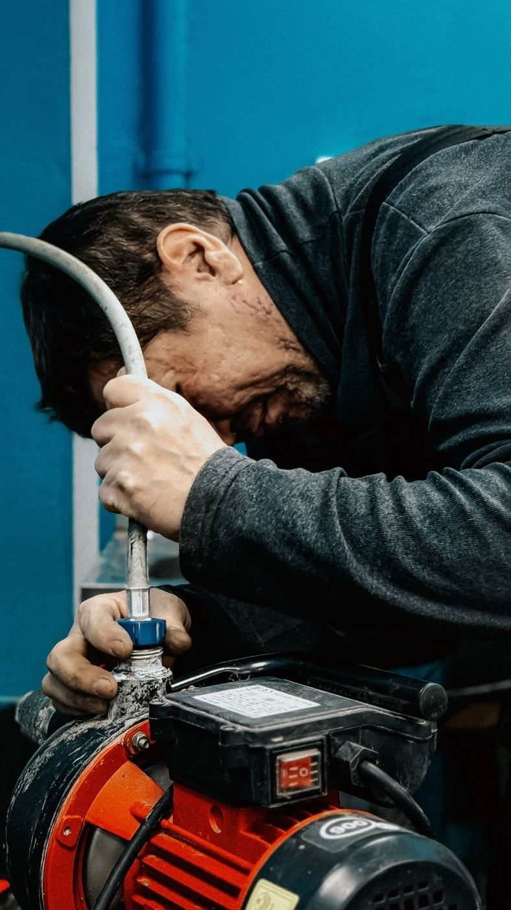
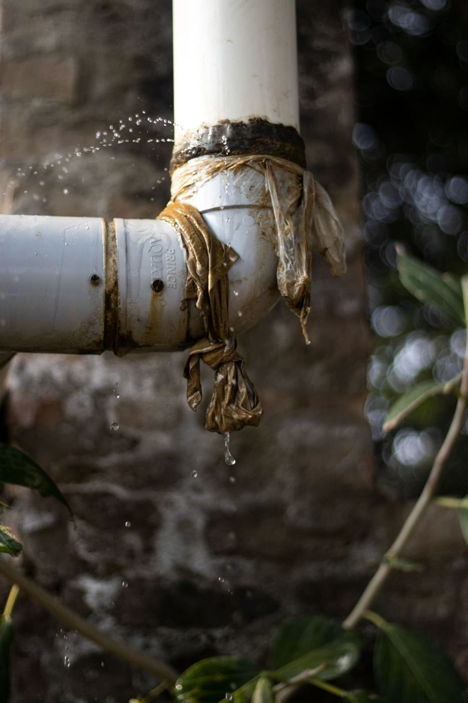
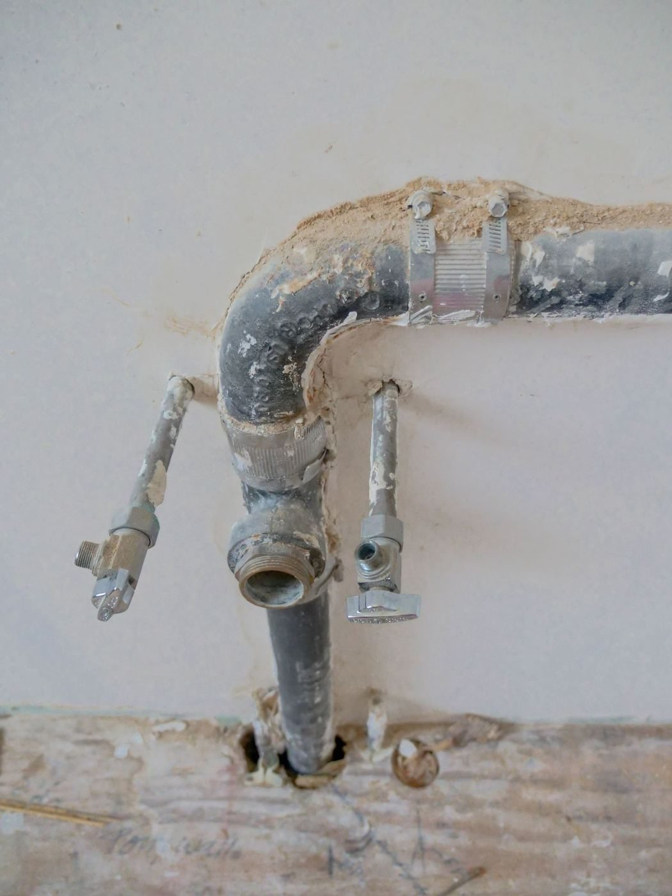

Chattanooga, Tennessee
True Plumb is a residential plumbing service in Chattanooga, offering toilet installation, pipe leak repair, and water heater installation and repair. Call to ask about a job.

True Plumb is a residential plumbing service at 7734 Pinewood Dr in Chattanooga, described in research as a residential plumbing specialist. Services include toilet installation, pipe leak repair, and water heater installation and repair. True Plumb is a partner and sponsor of Rise for ALS Chattanooga, per research.


7734 Pinewood Dr, Chattanooga, TN
Monday to Friday 8:00 AM to 5:00 PM